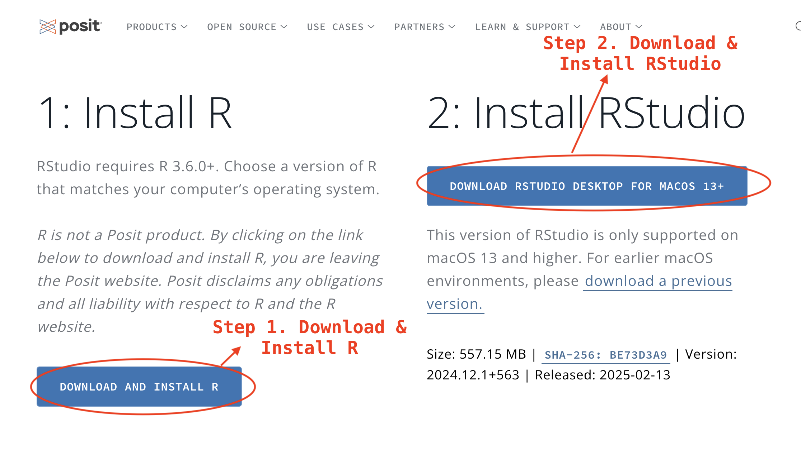
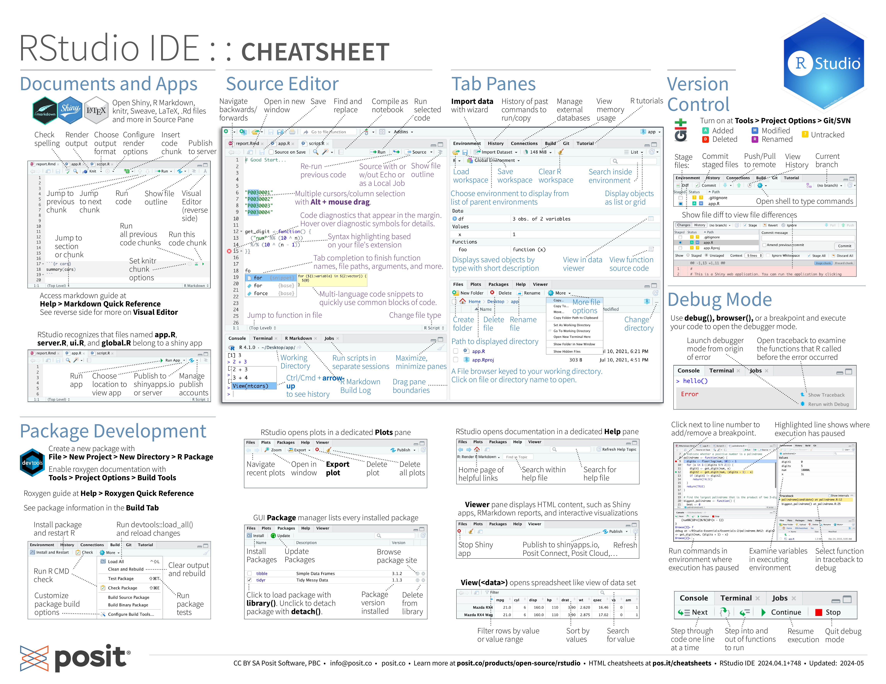

library(tidyverse)
2 + 2[1] 4This chapter introduces the tools we will use throughout the book. You will install R and RStudio, create one R Project for the lessons, install the tidyverse, and make your first R Markdown document.
By the end of this chapter, you should be able to:
R is a programming language for working with data. We can use it to read data, clean tables, calculate statistics, and create charts. The instructions we write in R are called code.
R is also the engine that runs that code. When we ask R to calculate 2 + 2, R does the calculation and returns the result. Later, the same engine will run longer sequences of instructions that produce a table or chart.
R is useful for data journalism because the code keeps a record of the steps between a source file and a finding. Those steps can be rerun when the data are updated, checked by an editor, or shared with another reporter. R is free and open source, and it runs on Windows, macOS, and Linux.
Download R from the Comprehensive R Archive Network (CRAN). CRAN is the official network that distributes R and thousands of contributed packages. Select your operating system, download the current release, and use the standard installation options.
The R Project’s official What is R? page gives a broader introduction. The CRAN website contains downloads, manuals, and other R resources.
RStudio is a program that makes it easier to work with R. More precisely, it is an integrated development environment, often shortened to IDE. An IDE brings the tools for writing code, running it, viewing results, and organizing files into one screen.
R and RStudio are related, but they are not the same thing:
| Tool | Main job |
|---|---|
| R | Understands and runs R code |
| RStudio | Provides a convenient place to write the code and work with the results |
One way to remember the relationship is that R is the engine and RStudio is the workspace around the engine. RStudio needs R to be installed, which is why R must be installed first.
After installing R, download RStudio Desktop and use the standard installation options.

Install R first and RStudio second. Opening RStudio does not replace R; RStudio uses the installed R engine to run your code.
RStudio normally displays four areas called panes:
| Position | Pane | What happens there |
|---|---|---|
| Top left | Source | Write and save R Markdown documents and other code files |
| Bottom left | Console | Run short R commands and see immediate results |
| Top right | Environment | See the data and other objects created during the current session |
| Bottom right | Files, Plots, Packages, Help | Find files, view charts, manage packages, and open help pages |
The Source pane holds work that you save. The Console is useful for a quick experiment, but commands typed only there are easy to lose. For the lessons in this book, write important code in an R Markdown document.

Posit provides an official RStudio getting-started guide and a more detailed RStudio IDE user guide. You can also download the course’s RStudio IDE cheatsheet.
An R Project is a folder that keeps the files for one piece of work together. RStudio calls it an RStudio Project and adds a small file ending in .Rproj to the folder.
Opening the .Rproj file tells RStudio which project you are working on. It also makes the project folder the working directory: the starting place R uses when it looks for a file. This allows us to use a short path such as data/news.csv instead of a path tied to one person’s Desktop.
Projects are helpful because they keep these materials together:
We will create one project and continue using it throughout the book:
djr as the directory name.data.outputs.The project should begin like this:
djr/
├── data/
├── outputs/
└── djr.RprojOpen djr.Rproj whenever you return to the lessons. Do not create a new project for every chapter; create a new R Markdown document inside this same project.
The official RStudio Projects guide explains how projects manage files, working directories, and separate R sessions. The simple project above is all you need to begin this book.
R includes many useful tools, but it does not include every task someone might need. An R package is a collection of reusable functions, documentation, and sometimes example data. A function is a named instruction that performs a task. For example, a function might import a CSV file or draw a chart.
There are two separate actions to remember:
| Action | When it is needed | Example |
|---|---|---|
| Install a package | Usually once on a computer | install.packages("tidyverse") |
| Load a package | At the start of a new R session or document | library(tidyverse) |
Think of installation as putting a book on your shelf. Loading is taking that book from the shelf so you can use it during the current session.
The tidyverse is a collection of R packages designed to work together. The packages use consistent ideas and data structures, so learning one makes the others easier to use. Important packages in this book include:
| Package | What we use it for |
|---|---|
| readr | Import CSV files |
| dplyr | Select, filter, sort, and summarise data |
| tidyr | Reshape data |
| ggplot2 | Create charts |
| tibble | Work with tidyverse data tables |
| stringr | Work with text |
| forcats | Work with categories |
| lubridate | Parse and work with dates and times |
Install the tidyverse and R Markdown package in the Console:
install.packages("tidyverse")
install.packages("rmarkdown")The tidyverse provides the tools for working with data. The rmarkdown package allows RStudio to run an .Rmd file and turn its writing, code, and results into a finished document such as an HTML page. We install it now because every lesson in the main pathway uses R Markdown.
Quotation marks are needed because the package name is text. Installation can take several minutes and may display many messages. You normally do not need to install these packages again for every chapter.
Run install.packages() in the Console. Put library(tidyverse) inside the R Markdown document so the document records which tools it needs.
Start with the official tidyverse overview and the free book R for Data Science. Individual package websites provide examples and full function references for readr, dplyr, tidyr, ggplot2, and lubridate.
Markdown is a simple way to add formatting to plain text. Instead of using toolbar buttons, you type small marks that describe the structure. For example:
| What you want | What you type |
|---|---|
| A heading | # My heading |
| Bold text | **important finding** |
| A bullet point | - first item |
| A link | [R Project](https://www.r-project.org/) |
| Inline code | `read_csv()` |
R Markdown combines Markdown writing with executable R code in one file. An R Markdown filename ends in .Rmd. It can contain three kinds of material:
This combination is useful in journalism because an explanation, the code behind it, and the resulting table or chart stay together.
Inside djr, choose File → New File → R Markdown. Enter a title and your name, select HTML output, and save the file as 00-setup.Rmd beside djr.Rproj.
The top of the new document contains YAML metadata between two lines of three dashes. YAML is a simple name: value format for document settings:
---
title: "Data Journalism W1"
author: "Your name"
output: html_document
---For now, edit the title and author but leave output: html_document unchanged.
Below the YAML, write a short introduction using ordinary text and Markdown. Then add a code chunk with Ctrl + Alt + I on Windows or Cmd + Option + I on Mac. RStudio creates the chunk markers for you. Put these two lines inside the chunk:
library(tidyverse)
2 + 2[1] 4library(tidyverse) loads the tidyverse packages for the current session. The second line asks R to perform a calculation.
Click the green arrow on the chunk to run it. The result appears beneath the code. Running one chunk is useful while learning or checking a step.
Click Knit to run the entire R Markdown document from top to bottom and create an HTML file. The HTML file is the finished output; the .Rmd file is the editable source containing your writing and code.
Restart R with Session → Restart R, then click Knit again. If the HTML file is created, the document contains the instructions it needs and your setup is working.
Use the official R Markdown introduction, Markdown basics lesson, and R Markdown documentation when you want more detail. The course also includes an R Markdown cheatsheet.
Complete these steps in 00-setup.Rmd:
library(tidyverse) and 2 + 2.| What you see | What it usually means | What to check |
|---|---|---|
there is no package called ... |
The package is not installed | Run install.packages() in the Console |
could not find function ... |
The package is not loaded | Put library(tidyverse) near the top of the document |
| Knit fails but a chunk worked | The Console contains something the document did not create | Restart R and knit from the top |
| R cannot find a file | The wrong project is open or the path is incorrect | Open djr.Rproj and check the Files pane |
| Term or command | What it means or does |
|---|---|
| R | The language and engine that runs the data analysis |
| RStudio | The IDE where we write code, manage files, and view results |
| R Project | Keeps the files for one piece of work together and gives R a reliable starting folder |
| Package | A collection of functions, documentation, and sometimes data |
install.packages() |
Installs a package on the computer, usually once |
library(tidyverse) |
Loads the core tidyverse packages for the current session |
| Markdown | Plain text with simple marks for headings, links, lists, and other formatting |
| R Markdown | A .Rmd document combining Markdown, R code, and results |
| Code chunk | A section of an R Markdown document that contains executable code |
| Knit | Runs the document and creates an output such as HTML |
In the next chapter, we will learn how to read and write the small pieces of R code used throughout the book.